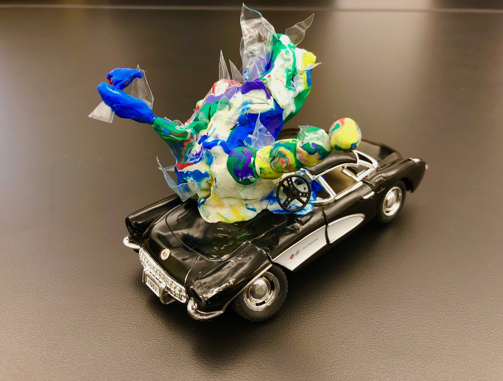
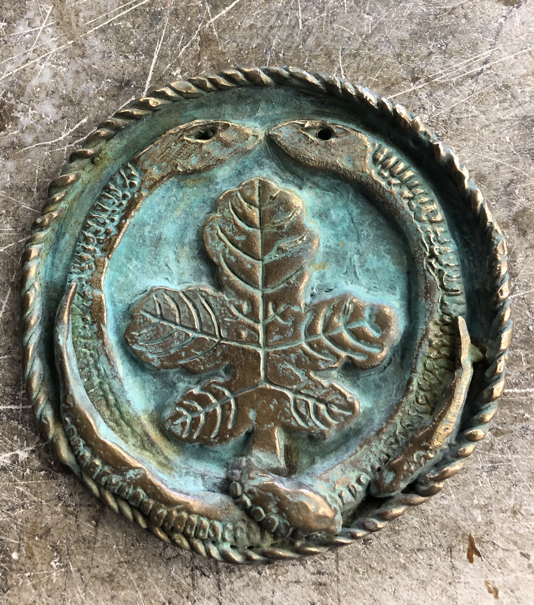
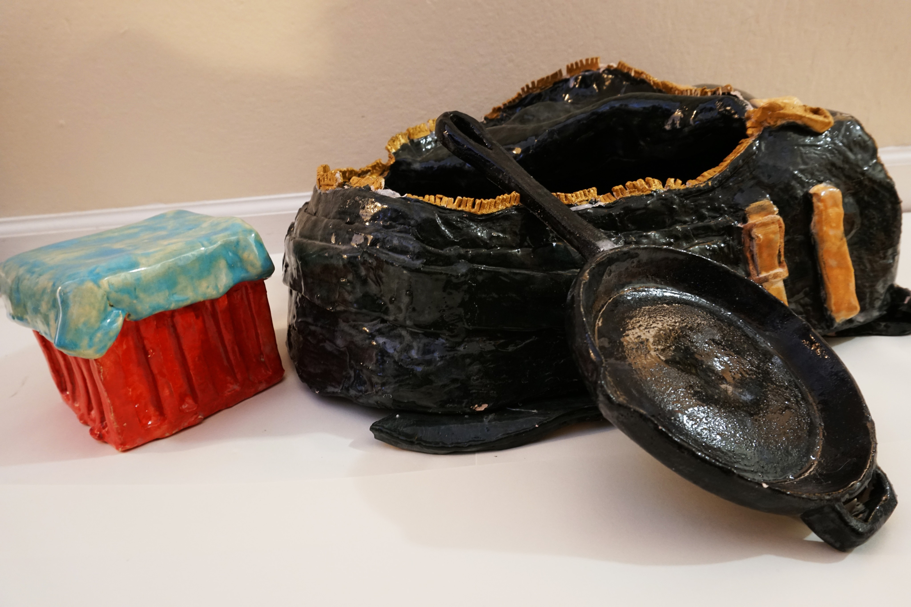
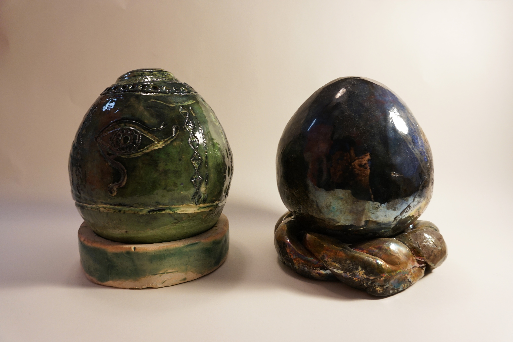

3D WORKS
description
1. The Moment / found object/oil cray / 15*5*10 cm

This is a found-object remake project from ART 2. I represent the moment when I had a car accident. The mixed clay represents my feelings and memories at that time. I cut the plastic into pieces and made it looked like glass shards.
2. Talisman Project / bronze/patita / 15 cm

The snake is a symbol of longevity, and this leaf in the center is the crest of my house. I created it with the hope of family health, peace, and good luck.
3. The Airborne / ceramic / 50*25*20 cm

These ceramic objects were made in ART 68 class. I made things on my theme using various techniques. At that time, I was absorbed in the FPS game called PUBG, so I made a box of air supplies, a bag, and a pan, which are items that came out of the game.
4. Eggs / ceramic / 10*10*18 cm each

This was the first project made with art68. The eggs on the left were designed inspired by Egyptian murals. The egg on the right is painted in jet black, giving a simple and mysterious atmosphere.